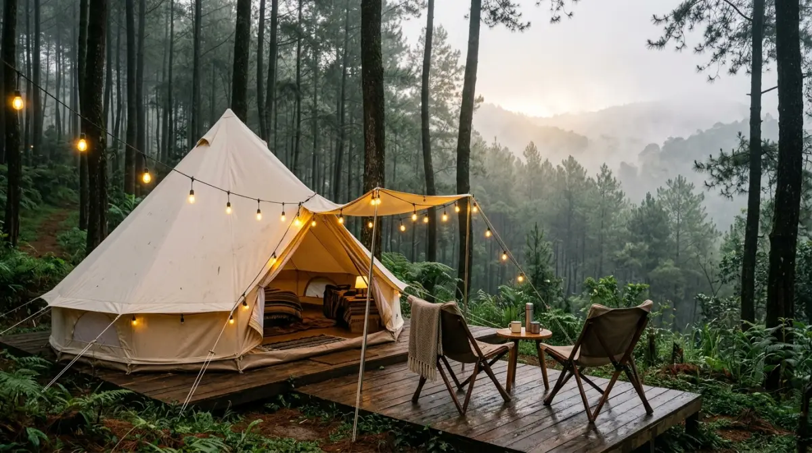
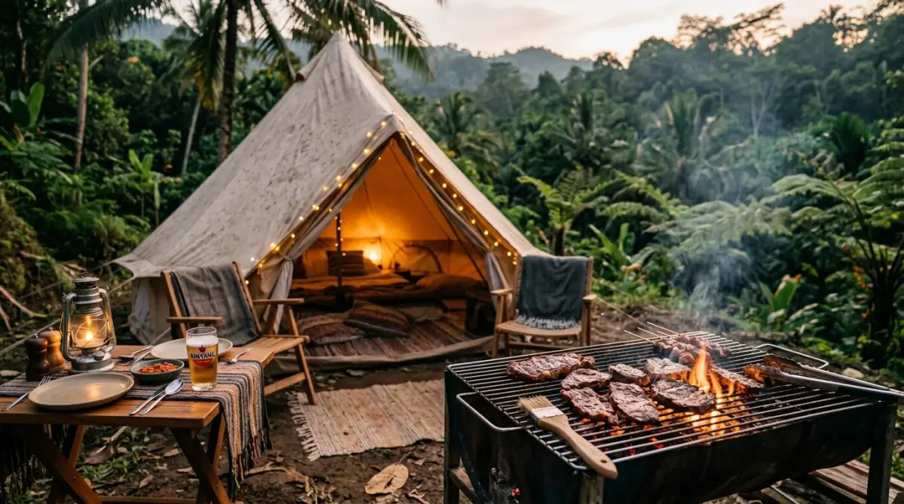

Camping ala ala mempertemukan kenyamanan dan keindahan alam — tanpa harus menjadi survivalist andal.Pernah nggak kamu sadar, tiba-tiba sudah Minggu malam lagi, dan kamu cuma menghabiskan akhir pekan rebahan santai sambil doomscrolling media sosial di kamar? Rasanya penat dari lima hari bekerja dengan tumpukan deadline dan revisi klien belum juga hilang, tapi besok pagi sudah harus kembali berdesakan di KRL atau menatap layar laptop.
Sementara itu, di feed Instagram, kamu melihat teman-temanmu tampak begitu segar setelah menghabiskan akhir pekan berbaur dengan alam. Ada penyesalan kecil yang muncul, kan? Waktu berhargamu untuk me-recharge mental dan fisik terbuang begitu saja hanya karena kamu merasa terlalu lelah untuk merencanakan liburan.
Kalau membayangkan camping tradisional dengan tenda berat dan masak mi instan pakai nesting bikin kamu makin pusing, tenang saja. Untuk kita para pekerja urban yang kehabisan baterai sosial, ada satu jalan keluar yang sangat masuk akal: mencoba tren camping ala ala. Ini adalah cara cerdas menikmati tenangnya alam tanpa harus mengorbankan kenyamanan.
Bagi kebanyakan dari kita, rutinitas pekerjaan sering kali terasa seperti lari maraton tanpa garis finis. Mulai dari kejar tayang laporan bulanan, meeting dari pagi sampai sore yang rasanya bisa diselesaikan lewat satu email saja, hingga drama grup WhatsApp kantor yang tak pernah sepi. Tidak heran jika saat akhir pekan tiba, energi kita sudah terkuras habis.
Di sinilah letak dilemanya. Tubuh dan pikiran kita butuh udara segar pegunungan atau suara jangkrik di malam hari untuk meredakan stres, tapi sisa tenaga yang ada rasanya tidak cukup untuk melakukan persiapan liburan alam yang berat. Dulu, kata "camping" selalu identik dengan aktivitas fisik yang menguras keringat. Namun sekarang, lanskap liburan telah berubah.
Apa Itu "Camping Ala Ala" dan Kenapa Jadi Incaran Kaum Urban?
Mungkin kamu sering mendengar istilah glamping (glamorous camping), campervan, atau sekadar piknik estetik di pinggir danau. Nah, itulah yang kita sebut dengan "camping ala ala". Sederhananya, ini adalah sebuah pergeseran budaya liburan di mana kenyamanan bertemu dengan keindahan alam.
Pertanyaannya, kenapa konsep ini begitu digandrungi belakangan ini? Jawabannya sederhana: efisiensi energi dan maksimalisasi pengalaman. Masyarakat perkotaan saat ini mengalami tingkat kelelahan mental yang cukup tinggi (burnout). Secara psikologis, manusia memang memiliki kebutuhan inheren untuk terhubung dengan alam bebas guna menurunkan kadar hormon kortisol (hormon stres).
Sayangnya, proses menuju alam bebas itu sering kali justru menambah stres baru jika persiapannya rumit. "Camping ala ala" memotong semua kerumitan tersebut. Kamu datang, semua sudah tersedia, dan kamu tinggal menikmati hasilnya. Bayangkan kamu sedang duduk santai di kursi lipat depan tenda kanvas yang estetik, memegang secangkir kopi hangat, sementara di dalam tenda sudah menanti kasur empuk yang siap memeluk punggung pegalmu.
Selamat Tinggal Ransel Berat, Halo Koper Skincare
Perbedaan paling kentara dari gaya liburan ini adalah soal barang bawaan. Kalau hardcore camping mengharuskanmu menghitung gramasi setiap barang yang masuk ke dalam carrier agar pundak tidak jebol, "camping ala ala" membebaskanmu dari aturan itu. Kamu bisa membawa koper kabin beroda kesayanganmu.
Bagi kamu yang sangat peduli dengan rutinitas perawatan kulit, ini adalah kabar gembira. Kamu tidak perlu meninggalkan serum, sunscreen, atau sheet mask favoritmu. Justru, memakai sheet mask sambil mendengarkan suara gemerisik daun pinus di kawasan sejuk seperti Batu, Malang, atau Lembang adalah definisi healing yang paripurna. Intinya, kamu sedang memindahkan kenyamanan kamar tidurmu yang ber-AC ke tengah hutan pinus yang alami.
Fasilitas Lengkap: Colokan Listrik dan Toilet Bersih adalah Kunci
Mari kita jujur, dua hal yang paling sering membuat orang maju-mundur untuk pergi camping adalah urusan baterai handphone dan kamar mandi. Dalam konsep "camping ala ala", dua ketakutan terbesar ini sudah tereliminasi.
Penyedia layanan liburan gaya baru ini sangat paham bahwa target pasar mereka adalah anak muda dan keluarga muda yang tidak bisa lepas dari konektivitas — entah itu untuk sekadar update Instagram Story, memutar playlist Spotify peneman senja, atau sekadar berjaga-jaga jika ada keadaan darurat. Oleh karena itu, colokan listrik yang memadai di dalam tenda menjadi fasilitas wajib.
Lebih penting dari itu adalah urusan sanitasi. Tidak ada lagi cerita harus menahan buang air sampai pagi atau berjalan jauh ke semak-semak dalam kegelapan. Toilet jongkok/duduk yang bersih, lantai keramik, air mengalir yang jernih, dan bahkan fasilitas water heater (pemanas air) sering kali sudah menjadi standar operasional. Kamu bisa mandi air hangat setelah puas menikmati kabut sore, sesuatu yang kemerluannya sangat sulit didapatkan di camping konvensional.

Sesi BBQ di depan tenda adalah salah satu highlight paling berkesan dalam pengalaman camping ala ala.Mengapa Kamu Harus Memprioritaskan Gaya Liburan Ini?
Kamu mungkin berpikir, "Ah, mending staycation di hotel saja kalau ujung-ujungnya cari kasur empuk." Pendapat itu tidak salah, tapi ada dimensi pengalaman yang hilang jika kamu hanya berpindah dari tembok beton apartemen/rumah ke tembok beton hotel.
Healing Tanpa Perlu Pusing Persiapan
Dalam dunia kerja, kita sudah terlalu sering disuruh untuk merencanakan segalanya: membuat timeline proyek, menyusun KPI bulanan, hingga memikirkan plan B kalau klien tiba-tiba berubah pikiran. Saat akhir pekan, otak kita butuh istirahat dari keharusan merencanakan sesuatu.
Dengan glamping atau layanan kemah sejenis, kamu cukup melakukan reservasi, membayar DP, dan datang membawa baju ganti. Tidak ada drama mendirikan tenda yang rangkanya patah, atau kebingungan menyalakan api unggun yang kayunya basah. Semua layanan dasar seperti sarapan, alat pemanggang daging (BBQ) untuk makan malam, hingga kayu bakar untuk api unggun biasanya sudah disediakan oleh pengelola.
Kamu secara efektif mendelegasikan tugas-tugas melelahkan tersebut kepada pihak pengelola, persis seperti mendelegasikan tugas entry data ke sistem otomatisasi di kantormu. Hasilnya? Kamu punya waktu 100% penuh untuk mengobrol mendalam dengan pasangan, bermain santai dengan anak, atau sekadar melamun sendirian melihat kabut turun.
Stok Foto Estetik untuk Feed Instagram
Kita tidak bisa memungkiri bahwa di era digital ini, validasi sosial dan keinginan untuk membagikan momen indah adalah hal yang wajar. Berbeda dengan tenda dome biasa yang fungsional namun secara visual mungkin kurang menarik, fasilitas "camping ala ala" didesain sedemikian rupa agar sangat Instagramable.
Mulai dari bentuk tenda (seperti tenda bell, tenda safari, atau kabin kayu berbentuk segitiga), lampu string yang berjejer hangat kekuningan (lampu warm white), hingga interior tenda yang dilengkapi karpet bohemian dan bean bag. Setiap sudut adalah latar belakang foto yang potensial. Pulang dari liburan, kamu tidak hanya membawa pikiran yang lebih jernih, tapi juga ratusan foto berkualitas yang siap dicicil untuk update media sosial selama sebulan ke depan.
"Alam tidak memerlukan persiapan yang rumit untuk bisa dinikmati. Yang kamu butuhkan hanyalah keberanian untuk melangkah keluar dari rutinitas."
— Filosofi Glamping ModernTips Memulai Pengalaman "Camping Ala Ala" Pertamamu
Jika ini adalah kali pertama kamu memutuskan untuk menggeser sedikit zona nyamanmu ke alam bebas tanpa mau repot, ada beberapa langkah strategis yang bisa kamu terapkan agar pengalaman pertamamu berkesan.
Pilih Lokasi yang Ramah Pemula
Jangan langsung memilih lokasi yang terlalu terpencil meskipun foto-fotonya bagus. Sebagai langkah awal, pilihlah glamping site atau taman campervan yang akses jalannya mudah dilalui oleh mobil biasa (bukan mobil offroad). Pastikan lokasinya memiliki sinyal seluler yang cukup stabil, sekadar untuk memberikan rasa aman.
Kawasan dataran tinggi yang sudah terkelola dengan baik secara komersial dan dekat dengan pemukiman warga atau tempat wisata utama adalah pilihan cerdas. Jika kamu tidak suka tidur di tenda besar, menyewa campervan yang sudah terparkir rapi di pinggir danau atau sungai kecil bisa jadi alternatif menarik yang memberikan privasi lebih.
Sesuaikan Ekspektasi dengan Realita Cuaca
Meskipun kamu tidur di kasur empuk, ingatlah bahwa batas antara dirimu dan alam liar hanyalah selembar kanvas tebal atau dinding kayu yang tipis. Cuaca adalah satu-satunya hal yang tidak bisa dikendalikan oleh pengelola seenaknya.
Sebagai contoh, jika kamu merencanakan camping di bulan ber-ber (September-Desember) yang intensitas hujannya tinggi, jangan membayangkan malam yang selalu dihiasi langit berbintang. Bersikaplah adaptif; jika hujan turun, itu adalah momen terbaik untuk menyeduh cokelat panas di teras tenda sambil membaca buku atau bermain board game bersama keluarga.
Bawa Pakaian Nyaman, Bukan Cuma Baju Gaya
Karena mengejar foto estetik, banyak pemula yang hanya membawa pakaian modis namun salah kostum. Menggunakan high heels atau sepatu pantofel di area perkemahan yang tanahnya tidak rata adalah resep pasti untuk kaki terkilir.
Bawalah baju yang layering (berlapis). Cuaca di pegunungan bisa sangat panas dan terik di siang hari, namun berubah drastis menjadi sangat dingin menusuk tulang di malam hari. Bawa jaket tebal yang menghangatkan, celana panjang yang nyaman untuk bergerak, dan sepatu kets atau sandal gunung. Kamu tetap bisa tampil modis dengan padu padan warna earth tone (cokelat, hijau lumut, krem) yang menyatu sempurna dengan latar belakang alam untuk kebutuhan fotomu, tanpa mengorbankan kenyamanan fisikmu sendiri.
Di penghujung hari, tujuan dari sebuah liburan adalah mengembalikan dirimu menjadi manusia seutuhnya, bukan sekadar mesin pencetak uang atau robot penyelesai tugas. Kamu berhak mendapatkan ketenangan, kamu berhak mencium aroma tanah basah sehabis hujan, dan kamu berhak merasakan hangatnya matahari pagi yang menembus dedaunan pinus.
Waktu tidak akan pernah berhenti berjalan menunggumu menemukan "waktu yang tepat" untuk beristirahat. Mencoba camping ala ala adalah langkah kecil yang sangat mudah untuk dilakukan akhir pekan ini. Pesan tempatnya sekarang, ajak orang terkasih, kemas barang secukupnya, dan pergilah ke alam.
FAQ — Camping Ala Ala